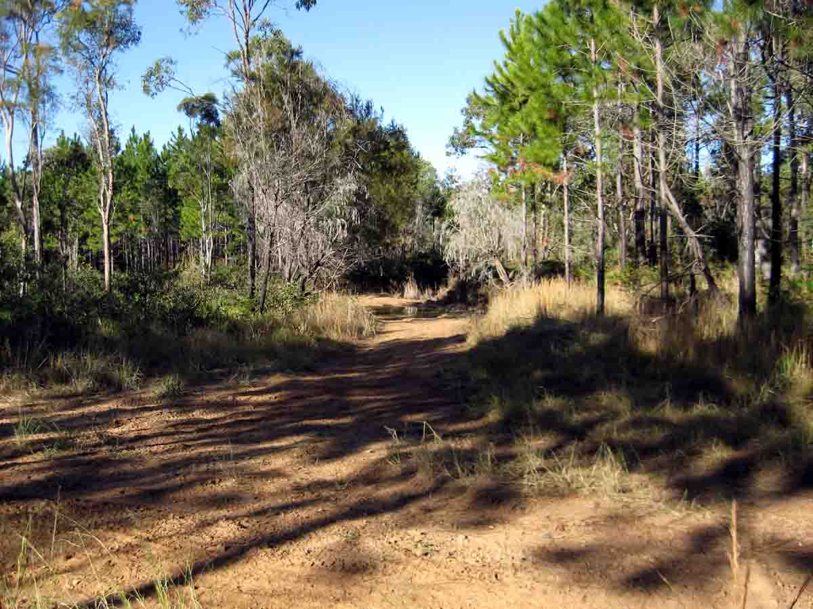
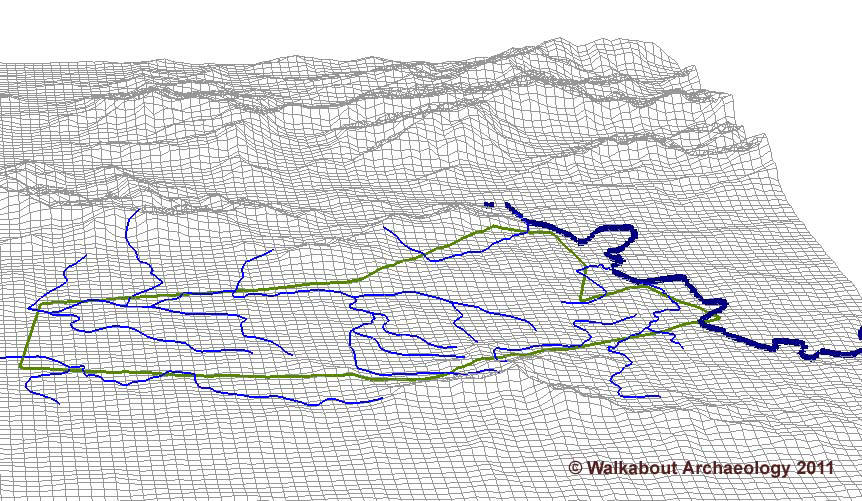

Notables from Camp Cable
Yarrabilba, Queensland, Australia
|
Notables from Camp Cable Yarrabilba, Queensland, Australia |
|
HomeMappingTopographyRemnant FeaturesEquipment, etcOrdnanceCoins
Leave a CommentView Comments
|
Topography  Typical pre-development site cover, dense pines and scrub.  Camp Cable (green) was sited on a creek plain of
modest hillocks and gullies. |
Home© Bootstrap Heritage 2012 |